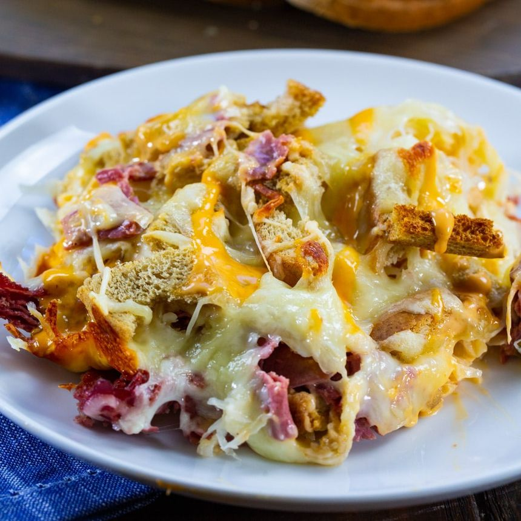

Reuben Casserole

Tasty Reuben casserole with layers of sauerkraut
Mixed with corned beef, Swiss cheese, rye bread crumb, and Russians style salad dressing, this Casserole is loaded.
Ingredients
- 6 slices rye bread, cubed
- 1 (16 ounce) can sauerkraut, drained and rinsed
- 1 pound deli sliced corned beef, cut into strips
- ¾ cup Russian-style salad dressing
- cooking spray
- 2 cups shredded Swiss cheese
Directions
- Preheat the oven to 400 degrees F (200 degrees C). Spray a 9x13-inch baking dish with cooking spray. Spray one sheet of aluminum foil with cooking spray.
- Spread bread cubes in the bottom of the prepared baking dish. Layer bread cubes with sauerkraut and beef strips, then pour dressing over top. Cover with the aluminum foil, sprayed-side down.
- Bake in the preheated oven for 20 minutes. Remove and discard foil; sprinkle Swiss cheese over casserole. Continue baking until cheese is melted and bubbly, about 10 more minutes.